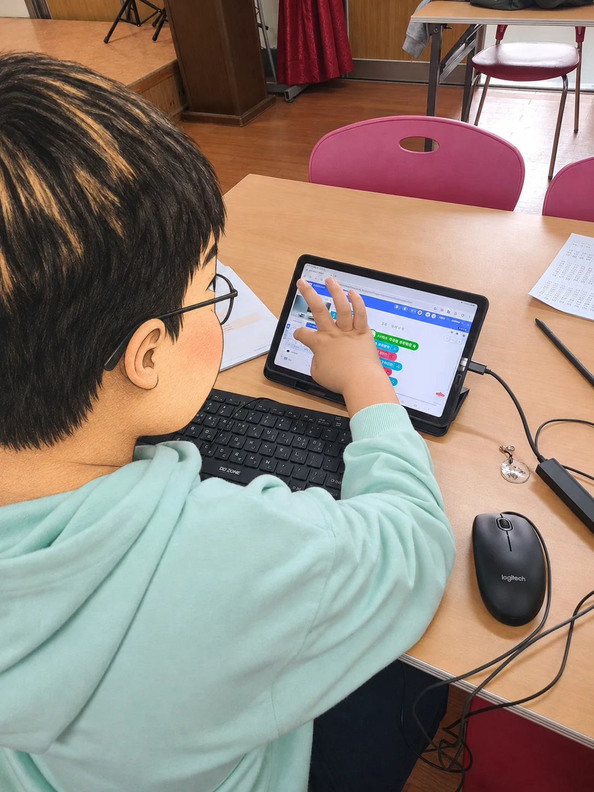
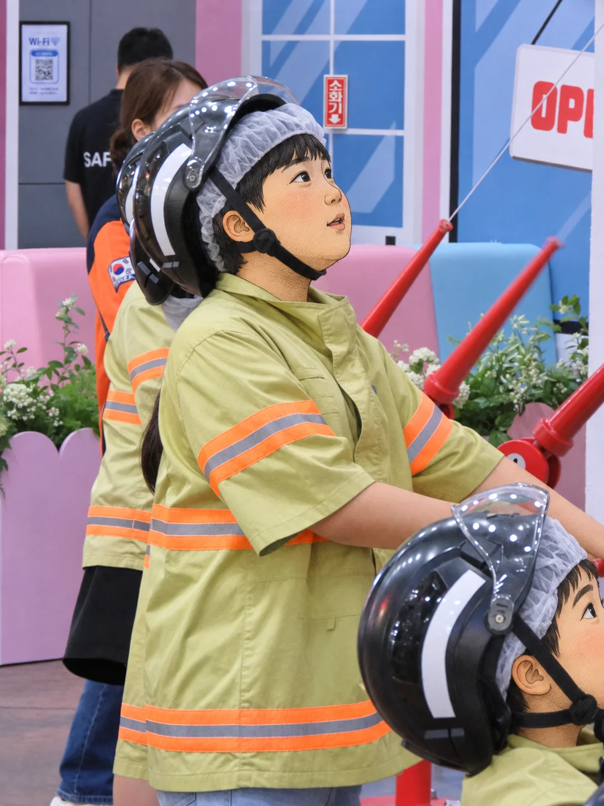
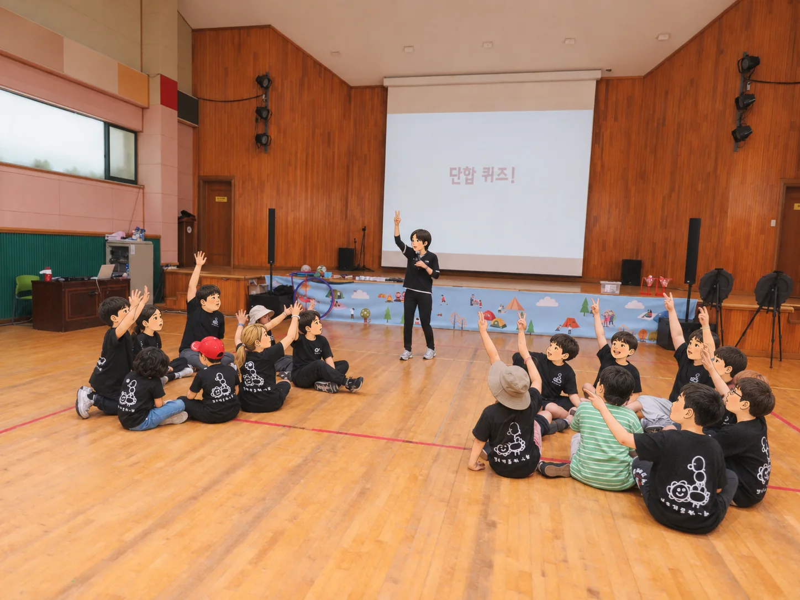

SW·AI 활용 수업

디지털 도구를 활용하는 캔바 수업
로봇으로 코딩의 원리를 이해하는 로봇코딩 수업
AI를 활용해 창의적 배움을 만드는 수업
작은 호기심 하나가 더 넓은 세상으로 이어지는 곳
로봇을 움직이는 코딩의 원리를 알아보고 디지털 도구로 새로운 생각을 표현합니다. 과학과 진로체험을 통해 세상을 탐색하는 활동도 함께 소개합니다.

이런 활동을 만날 수 있어요



※ 이곳은 학부모가 자율적으로 만든 비공식 소개 공간입니다. 실제 활동 내용과 일정은 학년도 및 운영 상황에 따라 달라질 수 있습니다.